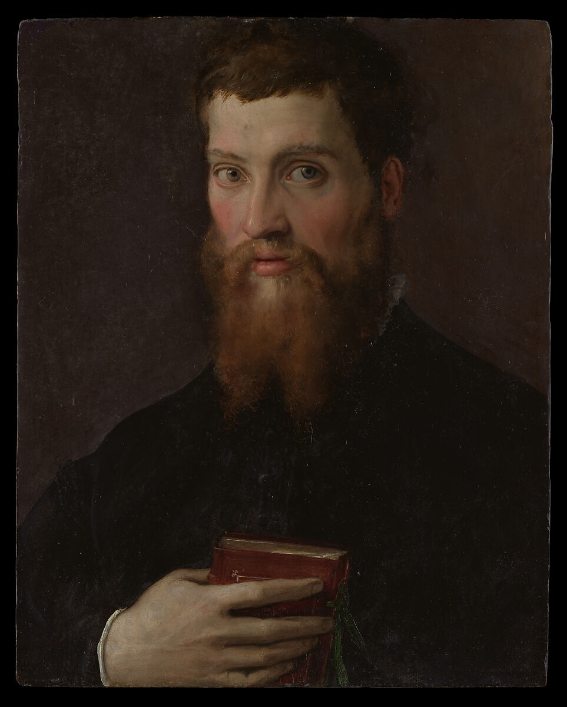
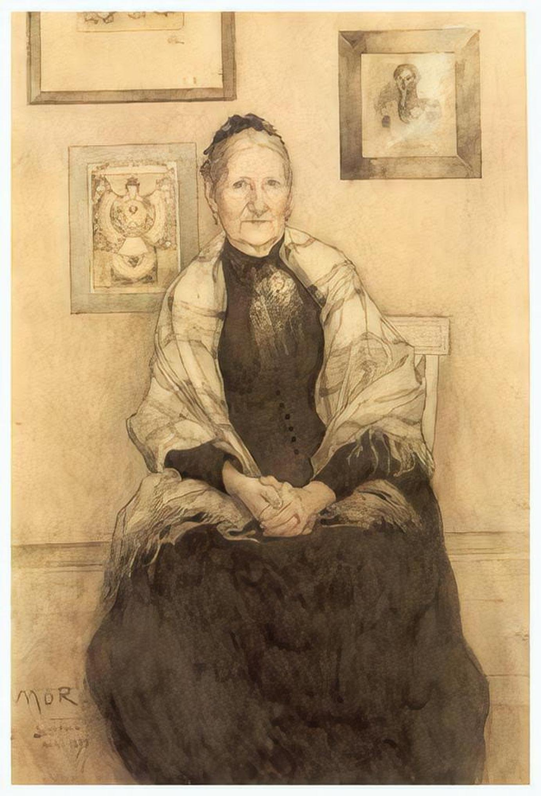
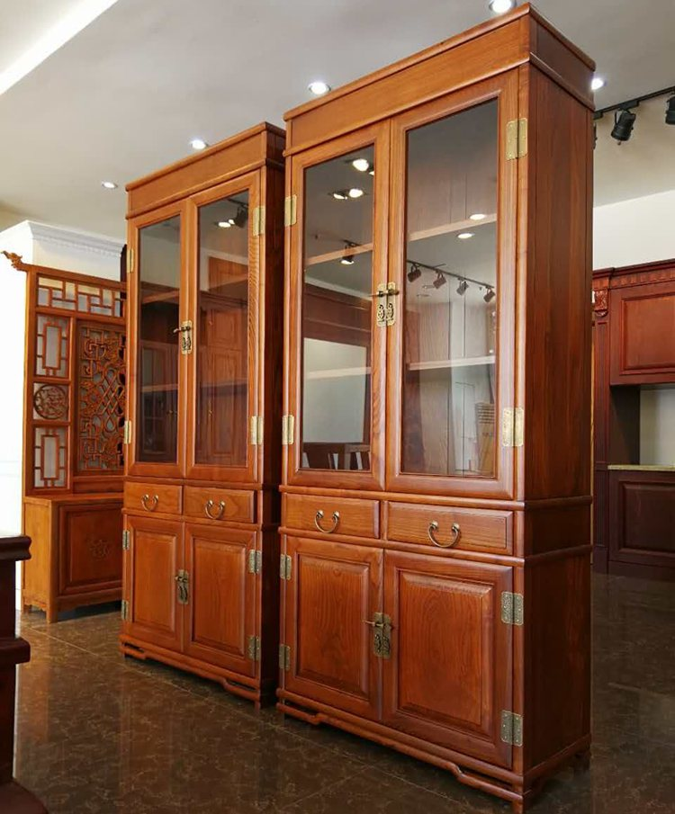
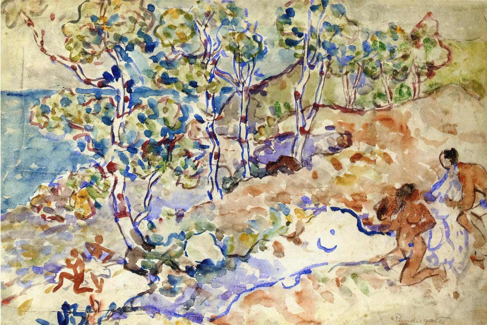
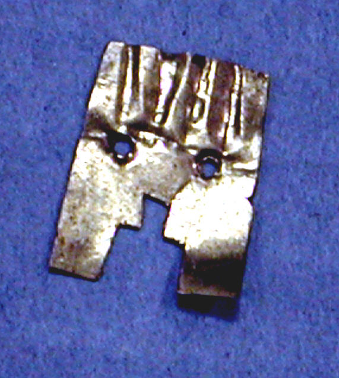
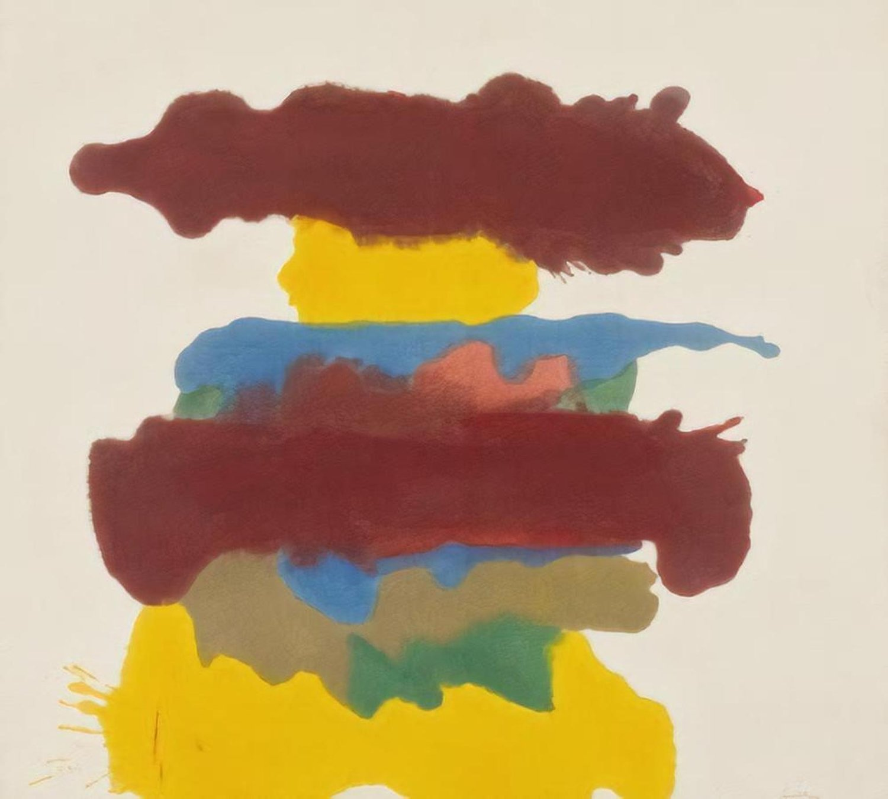

The Algorithmic Gaze of Image Quality Assessment: An Audit and Trace Ethnography of the LAION-Aesthetics Predictor
Visual generative AI models are trained using a one-size-fits-all measure of aesthetic appeal. However, what is deemed “aesthetic” is inextricably linked to personal taste and cultural values, raising the question of whose taste is represented in visual generative AI models. In this work, we study an aesthetic evaluation model—the LAION-Aesthetics Predictor (LAP)—that is widely used to curate datasets to train visual generative AI models, like Stable Diffusion, and evaluate the quality of AI-generated images. To understand what LAP measures, we audited the model across three datasets. First, we examined the impact of aesthetic filtering on the LAION-Aesthetics Dataset (1.2B images), which was curated from LAION-5B using LAP. We find that the LAP disproportionally filters in images with captions mentioning women, while filtering out images with captions mentioning men or LGBTQ+ people. Then, we used LAP to score 330k images across two art datasets, finding the model rates realistic images of landscapes, cityscapes, and portraits from western and Japanese artists most highly. In doing so, the algorithmic gaze of this aesthetic evaluation model reinforces the imperial and male gazes found within western art history. In order to understand where these biases may have originated, we performed a trace ethnography of public materials related to the creation of LAP. We find that the development of LAP reflects the biases we found in our audits, such as the aesthetic scores used to train LAP primarily coming from English-speaking photographers and western AI-enthusiasts. In response, we discuss how aesthetic evaluation can perpetuate representational harms and call on AI developers to shift away from prescriptive measures of “aesthetics” toward more pluralistic evaluation.
Although artistic taste is deeply subjective and highly political (Bourdieu, 1984), AI researchers often attempt to quantify the aesthetic quality of media (Tjandra et al., 2025; Huang et al., 2024). While aesthetic quality assessment (AQA) has been a topic of research in the computer vision community for decades (Datta et al., 2006; Murray et al., 2012), this task is particularly important to examine in light of the rapid growth in visual generative AI. Not only are AQA models used to curate the training data for visual generative AI models (Chen et al., 2024), but they are also used to assess the quality of AI-generated images (Gao and Liu, 2024). As generative AI models are trained on datasets scraped from across the web, researchers rely on computational methods to filter out “low-quality” data. Prior work has called attention to myriad gender and cultural biases in common dataset filtering techniques—such as blocklists (Dodge et al., 2021) and image-text similarity metrics (Hong et al., 2024)—but the consequences of aesthetic filtering has yet to be explored in detail.
尽管艺术品味具有高度主观性且深嵌于政治之中（Bourdieu, 1984），人工智能研究者仍常常尝试对媒介的美学质量加以量化（Tjandra et al., 2025; Huang et al., 2024）。美学质量评估（AQA）在计算机视觉社区已有数十年研究历史（Datta et al., 2006; Murray et al., 2012），而随着视觉生成式人工智能的迅速扩张，重新审视这一任务尤为紧要。AQA 模型不仅被用于策划视觉生成式人工智能模型的训练数据（Chen et al., 2024），还被用于评估人工智能生成图像的质量（Gao and Liu, 2024）。由于生成式人工智能模型训练于从网络各处抓取的数据集，研究者依赖计算方法剔除“低质量”数据。已有研究揭示了常见数据集过滤技术——例如黑名单（Dodge et al., 2021）与图文相似度指标（Hong et al., 2024）——中形形色色的性别与文化偏见，但美学过滤所导致的后果尚未被细致考察。
In this work, we investigate an AQA model—the LAION-Aesthetics Predictor (LAP)—that has been widely influential in visual generative AI research and commercial development. For example, LAP was used to curate the open-source LAION-Aesthetics Dataset from which Stability AI pre-trained the earliest versions of Stable Diffusion (Schuhmann, 2022). Additionally, LAP is often used to evaluate the quality of AI-generated images (Ding et al., 2024; Fong and See, 2024; Gao and Liu, 2024; He et al., 2023). Despite its far-reaching impact, the LAP itself has yet to be explored in detail.
本文考察一个在视觉生成式人工智能研究与商业开发中影响深远的 AQA 模型——LAION-Aesthetics Predictor（LAP）。举例而言，LAP 被用于策划开源的 LAION-Aesthetics 数据集，Stability AI 正是基于该数据集预训练了最早版本的 Stable Diffusion（Schuhmann, 2022）。此外，LAP 常被用于评估人工智能生成图像的质量（Ding et al., 2024; Fong and See, 2024; Gao and Liu, 2024; He et al., 2023）。尽管影响深远，LAP 本身却尚未被细致考察。
Due to the subjectivity of aesthetic evaluation, we first explored (RQ1) what the LAP model determines to be a “high-quality” image using three datasets. First, we examined the impact of aesthetic filtering on the LAION-Aesthetics Dataset (1.2B images), which was curated using LAP. We find that the LAP disproportionally filters in images with captions mentioning women, while filtering out images with captions mentioning men or LGBTQ+ people. Then, we used LAP to score 330k images across two art datasets, finding the model rates realistic images of landscapes, cityscapes, and portraits from western and Japanese artists most highly. In other words, the algorithmic gaze of LAP reproduces the male gaze within western art history (Berger, 2008). To understand where these biases may have originated, we performed a trace ethnography of public materials to examine (RQ2) how LAP was developed. We find that LAP’s development reflects the biases from our audits, such as the aesthetic scores used to train LAP primarily coming from English-speaking photographers and western AI-enthusiasts.
鉴于美学评估具有主观性，我们首先用三个数据集考察（RQ1）LAP 模型判定何为“高质量”图像。其一，我们考察美学过滤对 LAION-Aesthetics 数据集（1.2B 张图像）的影响，该数据集正是用 LAP 策划而成。我们发现，LAP 不成比例地保留了说明文字中提及女性的图像，同时过滤掉提及男性或 LGBTQ+ 人群的图像。随后，我们用 LAP 为两个艺术数据集中的 330k 张图像打分，发现该模型对西方与日本艺术家创作的写实风景、城市景观与肖像题材评价最高。换言之，LAP 的算法凝视再现了西方艺术史中的男性凝视（Berger, 2008）。为理解这些偏见的可能来源，我们对公开材料开展了痕迹民族志研究，考察（RQ2）LAP 是如何被开发出来的。我们发现，LAP 的开发过程折射出与审计结果一致的偏见，例如用于训练 LAP 的美学分数主要来自英语使用者中的摄影者与西方的 AI 爱好者。
In light of our findings, we call on AI researchers to contend with aesthetics as a site of cultural representation. Simultaneously, we caution that greater “inclusion” in visual generative AI training data risks exacerbating the harms of these technologies. Additionally, we call on developers to shift away from prescriptive, universalist measures of “aesthetics” toward more descriptive, pluralistic evaluations. Finally, we discuss how future FAccT researchers might also combine audits and ethnographies of algorithmic systems.
鉴于上述发现，我们呼吁人工智能研究者把美学视为文化表征的场域加以正视。同时我们提醒，视觉生成式人工智能训练数据中的更多“包容”有可能加剧这些技术造成的伤害。此外，我们呼吁开发者从规定性、普世主义的“美学”度量，转向更具描述性、多元主义的评估。最后，我们讨论了未来 FAccT 研究者如何把审计与民族志结合起来研究算法系统。
LAION (Large-Scale Artificial Intelligence Open Network) is a non-profit founded in 2021 by Christoph Schuhmann, a German high school teacher, with the goal of creating open-source datasets and machine learning models (Newman and Cantrill, 2023). Despite its humble origins, LAION has highly influenced generative image model development. Stability AI researchers used the LAION-Aesthetics Dataset to pre-train the earliest versions of Stable Diffusion (Rombach et al., 2022). Unfortunately, the extent to which contemporary generative image models rely on the LAION datasets can be challenging to asses because developers have become cautious of disclosing their training data. While Stability AI shared that early versions of Stable Diffusion were trained using LAION datasets, the model card for their 2024 model Stable Diffusion 3.5-Large vaguely says it was ‘‘trained on a wide variety of data, including synthetic data and filtered publicly available data.’’11 1 https://huggingface.co/stabilityai/stable-diffusion-3.5-large This secrecy may be due to the increased scrutiny faced by LAION and generative AI developers (Reisner, 2023; Reisner and Gilbertson, 2024), which we will describe below.
LAION（Large-Scale Artificial Intelligence Open Network，大规模人工智能开放网络）是由德国高中教师 Christoph Schuhmann 于 2021 年创立的非营利组织，目标是创建开源数据集与机器学习模型（Newman and Cantrill, 2023）。尽管出身朴素，LAION 对生成式图像模型的发展影响巨大。Stability AI 的研究者使用 LAION-Aesthetics 数据集预训练了最早版本的 Stable Diffusion（Rombach et al., 2022）。遗憾的是，当前生成式图像模型对 LAION 数据集的依赖程度难以评估，因为开发者在披露训练数据上变得谨慎。虽然 Stability AI 曾表示早期版本的 Stable Diffusion 使用 LAION 数据集训练，但其 2024 年模型 Stable Diffusion 3.5-Large 的模型卡只含糊地称其“训练于种类广泛的数据，包括合成数据与经过筛选的公开可用数据。”11 1 https://huggingface.co/stabilityai/stable-diffusion-3.5-large 这种保密可能源于 LAION 与生成式人工智能开发者所面临的日益严格的审视（Reisner, 2023; Reisner and Gilbertson, 2024），下文将对此加以描述。
LAION has faced substantial criticism from both AI researchers and artists. LAION researchers compiled the 5.86 billion image-text pairs of the LAION-5B dataset by extracting image links and alternative text descriptions from the IMG HTML tags of websites archived by the Common Crawl, a US-based non-profit that has scraped publicly available websites since 2008 (Reisner, 2025; Baack, 2024b). Due to LAION researchers’ indiscriminate data collection practices, researchers found that LAION-5B contained over a thousand images of child sexual abuse material (CSAM) (Thiel, 2023). In addition to containing CSAM, LAION-5B contains millions of copyrighted images, leading to numerous lawsuits against LAION (Filikhina and Elsaß, 2025) and Stability AI (Tobin, 2025). Furthermore, Birhane et al. found that the image descriptions in LAION-400M and the English language subset of LAION-5B (LAION-2B-en) often contain hate speech (Birhane et al., 2023).
LAION 同时受到人工智能研究者与艺术家的严厉批评。LAION 研究者通过从 Common Crawl 归档网站的 IMG HTML 标签中提取图像链接与替代文本描述，汇编出包含 58.6 亿图文对的 LAION-5B 数据集；Common Crawl 是一家总部位于美国的非营利组织，自 2008 年起抓取公开可用的网站（Reisner, 2025; Baack, 2024b）。由于 LAION 研究者不加区分地采集数据，研究者发现 LAION-5B 中包含一千余张儿童性虐待材料（CSAM）图像（Thiel, 2023）。除 CSAM 外，LAION-5B 还包含数百万张受版权保护的图像，导致针对 LAION（Filikhina and Elsaß, 2025）与 Stability AI（Tobin, 2025）的多起诉讼。此外，Birhane 等人发现，LAION-400M 与 LAION-5B 的英语子集（LAION-2B-en）中的图像描述常常包含仇恨言论（Birhane et al., 2023）。
Although prior research has examined biases in LAION datasets (Birhane et al., 2023; Hong et al., 2024), the LAION-Aesthetics Dataset and the LAION-Aesthetics Predictor (LAP) model22 2 https://github.com/christophschuhmann/improved-aesthetic-predictor used to curate this dataset are underexplored. Not only is the LAION-Aesthetics Dataset widely used to pre-train and fine-tune visual generative AI models, but the LAP model used to to curate this dataset has also been used to curate internal corporate datasets (Chen et al., 2024) and to evaluate the performance of visual generative AI models (Ding et al., 2024; Fong and See, 2024; Gao and Liu, 2024; He et al., 2023). Although some humanistic research has critiqued how LAP was trained (Itävuori, 2025; Vianna, 2025), researchers have not yet empirically investigated what this image quality assessment model measures in practice. In doing so, we contribute both to scholarship on art and AI as well as, more broadly, AI evaluation and alignment practices. In the following sections, we briefly describe each of these contexts in greater detail.
尽管已有研究考察了 LAION 数据集中的偏见（Birhane et al., 2023; Hong et al., 2024），但 LAION-Aesthetics 数据集与用于策划该数据集的 LAION-Aesthetics Predictor（LAP）模型22 2 https://github.com/christophschuhmann/improved-aesthetic-predictor 仍鲜有研究。LAION-Aesthetics 数据集不仅被广泛用于预训练与微调视觉生成式人工智能模型，用于策划该数据集的 LAP 模型还被用于策划企业内部数据集（Chen et al., 2024）以及评估视觉生成式人工智能模型的性能（Ding et al., 2024; Fong and See, 2024; Gao and Liu, 2024; He et al., 2023）。虽然已有部分人文学研究批评了 LAP 的训练方式（Itävuori, 2025; Vianna, 2025），但研究者尚未实证考察这一图像质量评估模型在实践中究竟度量了什么。通过这一考察，我们既为艺术与人工智能的学术讨论作出贡献，也为更广泛的人工智能评估与对齐实践提供参考。下文将逐一详述这些语境。
AI researchers are increasingly critiquing the measurements used to train and evaluate AI models. For example, benchmarks often claim to measure concepts with no agreed upon definition, such as “intelligence” (Bean et al., 2025). Researchers have also criticized the notion of universal “gold standards” in data annotation (Wang et al., 2024). While researchers often treat annotator disagreement as noise to be filtered out, disagreements can stem from annotators’ differing lived experiences (Wang et al., 2024; Sap et al., 2022). In response, researchers have called for distinguishing between datasets intended to represent different beliefs or encode one specific belief (Röttger et al., 2022). AI alignment research focuses on normative evaluations where people can reasonably disagree about how a model should behave. For instance, LLMs tend to reflect social values more commonly held in western countries according to national value surveys (Tao et al., 2024). At the same time, this methodology can flatten intra-cultural differences (AlKhamissi et al., 2025). Instead of choosing one set of values to reflect, researchers have increasingly called for designing AI systems more pluralistically (Sorensen et al., 2024a; Sorensen et al., 2024b). In this work, we contend with “aesthetics” as an underexamined axis of alignment.
人工智能研究者正日益批评用于训练与评估人工智能模型的度量方式。例如，基准测试常声称要度量并无公认定义的概念，如“智能”（Bean et al., 2025）。研究者也批评了数据标注中普适“黄金标准”的观念（Wang et al., 2024）。研究者往往把标注者之间的分歧当作需要过滤的噪声，但分歧也可能源自标注者不同的生活经验（Wang et al., 2024; Sap et al., 2022）。对此，有研究者主张应区分旨在表征不同信念的数据集与编码单一特定信念的数据集（Röttger et al., 2022）。人工智能对齐研究关注的是规范性评估，即人们对模型应如何表现存在合理分歧的情形。例如，依据各国价值观调查，大语言模型往往更能反映西方国家普遍持有的社会价值观（Tao et al., 2024）。与此同时，这一方法也会抹平文化内部的差异（AlKhamissi et al., 2025）。越来越多的研究者不再选择反映某一种价值观，而是呼吁以更具多元主义的方式设计人工智能系统（Sorensen et al., 2024a; Sorensen et al., 2024b）。本文则把“美学”作为一个尚未被充分审视的对齐维度加以探讨。
Prior work has found that the design of visual generative AI models often harms marginalized communities. Text-to-image (T2I) models stereotype or poorly represent women (Bianchi et al., 2023), LGBTQ+ people (Ungless et al., 2023; Taylor et al., 2025), people of color (Wolfe and Caliskan, 2022), and non-western cultures (Fu et al., 2024; Mim et al., 2024; Qadri et al., 2025; Yerukola et al., 2025). T2I models made by western tech companies tend to perform worse in languages other than English, such as Farsi (Qadri et al., 2025) or Bangla (Mim et al., 2024). This linguistic bias can also be seen in a dataset we examine in this study: the LAION-Aesthetics Dataset is restricted to images with English captions (Schuhmann, 2022). HCI researchers have found that artists often enjoy the glitches and strangeness of T2I models (Chang et al., 2023), leading some to critique the stylistic bias toward realism in newer models (Taylor et al., 2025). In light of this concern, Taylor et al. have called for future research “examining measurements of aesthetic quality in popular datasets” (Taylor et al., 2025), which we take up in this work.
已有研究发现，视觉生成式人工智能模型的设计常常伤害边缘化社群。文本到图像（T2I）模型会对女性（Bianchi et al., 2023）、LGBTQ+ 人群（Ungless et al., 2023; Taylor et al., 2025）、有色人种（Wolfe and Caliskan, 2022）与非西方文化（Fu et al., 2024; Mim et al., 2024; Qadri et al., 2025; Yerukola et al., 2025）形成刻板印象或表现欠佳。西方科技公司开发的 T2I 模型在英语之外的语言上往往表现更差，例如波斯语（Qadri et al., 2025）或孟加拉语（Mim et al., 2024）。这种语言偏见同样体现在本文考察的一个数据集上：LAION-Aesthetics 数据集仅限于带有英文说明的图像（Schuhmann, 2022）。人机交互研究者发现，艺术家往往欣赏 T2I 模型的故障与怪异之处（Chang et al., 2023），这也导致一些人对较新模型中偏向写实的风格偏见提出批评（Taylor et al., 2025）。鉴于这一关切，Taylor 等人呼吁未来研究“考察流行数据集中美学质量的度量方式”（Taylor et al., 2025），本文正是承接了这一议题。
While the artistic consequences of aesthetic evaluation are underexamined, aesthetic quality assessment (AQA) has been a subject of research in the computer vision community for decades (Murray et al., 2012; Datta et al., 2006). In this work, researchers formulate AQA as a regression problem predicting a numerical aesthetic score. At the same time, this de-contextualized measurement of aesthetic quality has been critiqued (Goree et al., 2025; Huang et al., 2024). Goree et al. (2025) highlight value misalignments between various AQA models and human-preferences by developing an aesthetic evaluation mobile camera application. Like ourselves, Li et al. (2025) recently advocated for investigating aesthetic biases as an underexamined form of representational harms in mulit-modal LLMs. However, the authors conceptualize aesthetic biases as a distributional alignment problem wherein aesthetic evaluation models may privilege the values of one demographic group over others, examining age, gender and education. We extend this work by studying the broader cultural consequences of AQA on data curation and model evaluation, grounding the task within art history.
虽然美学评估的艺术后果尚未被充分审视，但美学质量评估（AQA）在计算机视觉社区已有数十年研究历史（Murray et al., 2012; Datta et al., 2006）。在该方向，研究者把 AQA 表述为预测数值化美学分数的回归问题。与此同时，这种去语境化的美学质量度量方式也受到批评（Goree et al., 2025; Huang et al., 2024）。Goree 等人（2025）通过开发一款美学评估手机相机应用，揭示了多个 AQA 模型与人类偏好之间的价值错位。与我们类似，Li 等人（2025）近期主张把美学偏见作为多模态大语言模型中一种未被充分审视的表征性伤害加以研究。不过，这些作者把美学偏见概念化为一个分布对齐问题，认为美学评估模型可能偏袒某一人口群体的价值观，并考察了年龄、性别与教育。本文则研究 AQA 在数据策划与模型评估上更广泛的文化后果，并把这一任务置于艺术史之中加以奠基，从而拓展了这一工作。
We audited LAP using three datasets. First, we examine the LAION-Aesthetics Dataset curated from LAION-5B by LAP. We then audited LAP using two art datasets with robust metadata on the artists, cultures, styles, and mediums associated with each image. The first dataset consists of 249,351 public-domain images from the Metropolitan Museum of Art (MET).33 3 https://www.metmuseum.org/hubs/open-access Located in New York City, the MET is the fourth largest museum in the world and its collection spans over 5,000 years (Tapia, 2021). While the MET dataset contains images from a wide breadth of art across various cultures and time periods, few images are of modern or contemporary art (only 865 images). Therefore, we evaluated LAP on the WikiArt dataset (Saleh and Elgammal, 2015) of 81,444 images of visual art by 129 primarily modern (mid-1800s to mid-1900s) artists. WikiArt is a community edited visual art encyclopedia commonly studied in digital humanities research (Mohamed et al., 2022; Fu and Razmjooy, 2025).
我们用三个数据集审计 LAP。首先，我们考察由 LAP 从 LAION-5B 中策划出的 LAION-Aesthetics 数据集。随后，我们用两个带有完备元数据的艺术数据集审计 LAP，这些元数据记录了每张图像关联的艺术家、文化、风格与媒材。第一个数据集包含来自大都会艺术博物馆（MET）的 249,351 张公有领域图像。33 3 https://www.metmuseum.org/hubs/open-access 位于纽约的 MET 是世界第四大博物馆，其藏品跨越五千余年（Tapia, 2021）。虽然 MET 数据集涵盖不同文化与时期的广泛艺术图像，但现代或当代艺术极少（仅 865 张）。因此，我们还在包含 81,444 张视觉艺术图像的 WikiArt 数据集（Saleh and Elgammal, 2015）上评估 LAP，这些作品出自 129 位以现代（19 世纪中叶至 20 世纪中叶）为主的艺术家。WikiArt 是一部社区编辑的视觉艺术百科，常被数字人文研究采用（Mohamed et al., 2022; Fu and Razmjooy, 2025）。
Across each datasets, our analyses primarily focus on understanding differences between images rated above and below an aesthetics score of 6.5. We chose this threshold because it is commonly used in computer vision research to represent high-quality images. The LAION-Aesthetics Dataset was released in multiple subsets based on different aesthetic thresholds, with images scored 4.5+ ( 1.2B images) being the lowest rated dataset and 6.5+ ( 625k images) being the highest rated. The LAD 6.5+ is widely used by computer vision researchers to fine-tune generative image models (Guo et al., 2024; Castells et al., 2024), evaluate new training methods (Luo et al., 2023; Fan et al., 2024), and create new datasets (Tudosiu et al., 2024; Li et al., 2024a). Additionally, Ding et al. measure the effectiveness of data poisoning attacks on text-to-image models by defining “generation aesthetics” as the “% of images with [LAP] aesthetics > 6.5” (Ding et al., 2024). In Tables 1 and 2 we also show the number of images rated 6+ to demonstrate that the aesthetic biases we identify across the 6.5+ threshold can also be seen across the 6+ threshold.
在各个数据集上，我们的分析主要关注美学分数 6.5 以上与以下图像之间的差异。选择这一阈值，是因为计算机视觉研究中常用它来表示高质量图像。LAION-Aesthetics 数据集按不同美学阈值发布了多个子集，其中评分 4.5+（ 1.2B 张图像）的子集评级最低，6.5+（ 625k 张图像）的子集评级最高。LAD 6.5+ 被计算机视觉研究者广泛用于微调生成式图像模型（Guo et al., 2024; Castells et al., 2024）、评估新的训练方法（Luo et al., 2023; Fan et al., 2024）以及构建新数据集（Tudosiu et al., 2024; Li et al., 2024a）。此外，Ding 等人把“生成美学”定义为“[LAP] 美学分数 > 6.5 的图像占比”，以此度量数据投毒攻击对文本到图像模型的有效性（Ding et al., 2024）。表 1 与表 2 中还给出了评分 6+ 的图像数量，以说明我们在 6.5+ 阈值上识别出的美学偏见在 6+ 阈值上同样存在。
LAD consists of all images from LAION-5B with English captions that LAP rated at least 4.5. In LAD, images are not stored directly. Rather, the dataset contains URLs to images hosted on websites across the internet. Most relevant for our findings, the metadata for each image in LAD contains its LAP predicted aesthetic score and a caption derived from the scraped image’s alternative text. We find that LAP rates images from independent visual artists and photographers highly. Also, images with captions mentioning women, Hindus, and Christians are more likely to be included in LAP 6.5+, while images with captions mentioning men, Jews, or Muslims are more likely to be filtered out.
LAD 由 LAION-5B 中所有带有英文说明、且被 LAP 评为至少 4.5 分的图像构成。LAD 并不直接存储图像，而是保存指向互联网各网站上托管图像的 URL。与我们的发现最相关的是，LAD 中每张图像的元数据包含其 LAP 预测美学分数，以及一条源自所抓取图像替代文本的说明文字。我们发现，LAP 对独立视觉艺术家与摄影者的作品评分很高。此外，说明文字中提及女性、印度教徒与基督徒的图像更可能被纳入 LAP 6.5+，而提及男性、犹太人或穆斯林的图像更可能被过滤掉。
图 1：LAION-Aesthetics 数据集中被 LAION-Aesthetics Predictor 模型评为 6.5+ 的图像的前 25 个来源域名。
图 2：正则表达式与图像被纳入 LAION-Aesthetics 数据集 6.5+ 子集之间的点互信息（PMI）。PMI 越高的词项（如 wom[ae]n）被纳入的可能性越高。每个身份词项的正则表达式形式为 \b(?i)gays\b。
We find substantial differences between the URLs of images below and above the 6.5 aesthetic threshold. In LAD 4.5+, the top 25 most common domains account for about 36% of all the images in the dataset. These domains are primarily from e-commerce websites (e.g., Shopify), stock image sites (e.g., Getty Images), and web hosts (e.g., Wordpress). For LAD 6.5+, the top 25 image domains account for proximately 52% of the dataset, meaning a majority of the images in this dataset come from the handful of websites in Figure 1. Of these 25 domains, 13 were also in the top 25 domains for LAD 4.5+. However, the other domains are primarily from smaller websites where independent visual artists (e.g., Redbubble, DeviantArt) and photographers (e.g., SmugMug, Flikr, 500px) share or sell their work. Additionally, the 25th most common source of images in LAD 6.5+ are from a small nature photography agency, robertharding.com. This indicates that LAP may rate photographic images more highly.
我们发现，美学阈值 6.5 上下两端的图像 URL 存在显著差异。在 LAD 4.5+ 中，前 25 个最常见的域名约占数据集中全部图像的 36%，这些域名主要来自电商网站（如 Shopify）、图库网站（如 Getty Images）与网络托管服务（如 Wordpress）。在 LAD 6.5+ 中，前 25 个图像域名约占数据集的 52%，意味着该数据集中的多数图像来自图 1 中的少数几个网站。这 25 个域名中有 13 个也出现在 LAD 4.5+ 的前 25 个域名中；其余域名则主要来自独立视觉艺术家（如 Redbubble、DeviantArt）与摄影者（如 SmugMug、Flikr、500px）分享或售卖作品的小型网站。此外，LAD 6.5+ 中第 25 常见的图像来源是一家小型自然摄影机构 robertharding.com。这表明 LAP 可能对摄影类图像评分更高。
| Department Name |
Median
Score |
Num Images
Scored 6.5 |
Num Images
Scored 6 |
Num Images |
| European Paintings | 5.73 | 35 | 483 | 2,289 |
| Photographs | 5.40 | 15 | 548 | 6,685 |
| Drawings & Prints | 5.06 | 13 | 435 | 60,889 |
| Robert Lehman Collection | 5.04 | 3 | 41 | 2,273 |
| The Cloisters | 4.96 | 0 | 1 | 2,258 |
| Costume Institute | 4.94 | 0 | 7 | 8,124 |
| Asian Art | 4.93 | 60 | 1,240 | 30,597 |
| The American Wing | 4.86 | 49 | 474 | 12,292 |
| Arms & Armor | 4.82 | 0 | 2 | 7,260 |
| The Libraries | 4.77 | 0 | 0 | 107 |
| Musical Instruments | 4.75 | 0 | 3 | 2,498 |
| Modern & Contemporary Art | 4.73 | 1 | 11 | 865 |
| European Sculpture & Decorative Arts | 4.72 | 1 | 12 | 37,709 |
| Arts of Africa, the Ancient Americas, & Oceania | 4.71 | 0 | 0 | 6,191 |
| Medieval Art | 4.70 | 0 | 1 | 6,887 |
| Egyptian Art | 4.65 | 0 | 3 | 13,269 |
| Islamic Art | 4.56 | 0 | 15 | 13,054 |
| Ancient West Asian Art | 4.41 | 0 | 1 | 6,093 |
| Greek & Roman Art | 4.29 | 0 | 7 | 30,011 |
表 1：大都会艺术博物馆各馆藏部门图像的预测美学分数。
To understand the content of images in LAD, we compared the frequencies of words in image captions above and below the 6.5 aesthetics score threshold. Similar to Dodge et al.’s prior audits of generative AI dataset filtering (Dodge et al., 2021), we computed the pointwise mutual information (PMI) (Church and Hanks, 1990) of a regular expression (regex) appearing in the 6.5+ subset of images in LAD. At a high level, PMI in this case measures the probability of observing a search term in the description for an image rated 6.5+ relative to chance. Therefore, a PMI much greater than 0 suggests the search term appears more often than by chance and a PMI much less than 0 suggests the regex occurs less often than expected. Building on identity-related regexes used in prior audits (Dodge et al., 2021; Hong et al., 2024), we computed the PMI of the regexes in Figure 2 appearing in LAD 6.5+ image descriptions.
为理解 LAD 中图像的内容，我们比较了美学分数阈值 6.5 上下两端图像说明文字中的词频。与 Dodge 等人对生成式人工智能数据集过滤的审计（Dodge et al., 2021）类似，我们计算了某个正则表达式（regex）出现在 LAD 6.5+ 图像子集中的点互信息（PMI）（Church and Hanks, 1990）。概括而言，此处的 PMI 度量的是：相对于随机概率，在被评为 6.5+ 的图像描述中观察到某个检索词的概率。因此，PMI 远大于 0 意味着该检索词出现的频率高于偶然，PMI 远小于 0 则意味着该正则式出现的频率低于预期。在已有审计所用身份相关正则式的基础上（Dodge et al., 2021; Hong et al., 2024），我们计算了图 2 中各正则式出现在 LAD 6.5+ 图像描述中的 PMI。
We find that images with descriptions mentioning women are more likely to be included in LAD 6.5+, while images mentioning men or LGBTQ+ communities are more likely to be excluded. Also, images with descriptions mentioning Hindu, Buddhist, or Christian communities are more likely to be included in LAD 6.5+, while images with descriptions mentioning Jews or Muslims are more likely to be filtered out. Images mentioning Asian or African communities are more likely to be included in LAD 6.5+ than those mentioning Latinx/e, Caucasian, or European communities. This may suggest that LAP more highly rates images of Asian and African communities than European communities. Alternatively, images containing Caucasians or Europeans may not mention this detail in their captions because whiteness is an unmarked racial category (Brekhus, 1998).
我们发现，描述中提及女性的图像更可能被纳入 LAD 6.5+，而提及男性或 LGBTQ+ 社群的图像更可能被排除。同样，描述中提及印度教、佛教或基督教社群的图像更可能被纳入 LAD 6.5+，而提及犹太人或穆斯林的图像更可能被过滤掉。提及亚洲或非洲社群的图像，比提及拉丁裔、白人或欧洲社群的图像更可能被纳入 LAD 6.5+。这可能意味着 LAP 对亚洲与非洲社群图像的评分高于欧洲社群；另一种解释是，包含白人或欧洲人的图像可能不会在说明文字中提及这一细节，因为白性是一种未被标记的种族范畴（Brekhus, 1998）。
As PMI is a relative measure, one must also consider the absolute number of image descriptions per regex. For example, the PMI of ‘whites?’ and ‘latin[oaxe]s?’ are both -0.95. However, there are 9,617 images in LAD 6.5+ with ‘whites?’ in their description but only 26 images for ther regex ‘latin[oaxe]s?’. Not only does ‘wom[ae]n’ have the highest PMI but the regex also appears in more image descriptions in LAD 6.5+ than any other regex in Figure 2 (15,706). Meanwhile, regexes associated with LGBTQ+ identities are far rarer in LAD 6.5+ image descriptions: ‘gays?’ (102), ‘lesbians?’ (20), ‘transgenders?’ (9), ‘bi-?sexuals?’ (2), and ‘non[ -]?binary’ (0). Understanding the cultural implications of aesthetic evaluation requires considering more than the representation of identity groups (Taylor et al., 2025). Below, we explore aesthetic filtering in greater detail by examining how LAP rates art from various cultures.
由于 PMI 是相对度量，还必须考虑每个正则式对应的图像描述的绝对数量。例如，‘whites?’ 与 ‘latin[oaxe]s?’ 的 PMI 均为 -0.95，但 LAD 6.5+ 中有 9,617 张图像的描述含 ‘whites?’，而正则式 ‘latin[oaxe]s?’ 仅对应 26 张图像。‘wom[ae]n’ 不仅 PMI 最高，其在 LAD 6.5+ 图像描述中出现的次数也多于图 2 中的任何其他正则式（15,706）。与此同时，与 LGBTQ+ 身份相关的正则式在 LAD 6.5+ 图像描述中极为罕见：‘gays?’（102）、‘lesbians?’（20）、‘transgenders?’（9）、‘bi-?sexuals?’（2）、‘non[ -]?binary’（0）。理解美学评估的文化意涵，需要考虑的不仅是身份群体的代表性（Taylor et al., 2025）。下文我们通过考察 LAP 如何评价不同文化的艺术，更细致地探讨美学过滤。
| Median Score |
Num Images
Scored 6.5 |
Num Images
Scored 6 |
Num Images | ||
| Genre | Cityscape | 5.97 | 539 | 2,151 | 4,602 |
| Portrait | 5.90 | 693 | 5,616 | 14,112 | |
| Landscape | 5.87 | 505 | 4,637 | 13,358 | |
| … | … | … | … | … | |
| Illustration | 5.36 | 11 | 140 | 1,902 | |
| Nude Painting | 5.45 | 3 | 117 | 1,923 | |
| Abstract Painting | 4.94 | 0 | 0 | 4,968 | |
| Style | Realism | 5.87 | 634 | 4,155 | 10,733 |
| Romanticism | 5.87 | 371 | 2,723 | 7,019 | |
| Impressionism | 5.89 | 646 | 4,898 | 13,060 | |
| … | … | … | … | … | |
| Cubism | 5.50 | 12 | 210 | 2,235 | |
| Pop Art | 5.05 | 2 | 33 | 1,483 | |
| Abstract Expressionism | 4.96 | 0 | 7 | 2782 | |
| Artist | Antoine Blanchard | 6.94 | 168 | 170 | 170 |
| Edouard Cortes | 7.09 | 208 | 214 | 214 | |
| … | … | … | … | … | |
| Pablo Picasso | 5.51 | 1 | 65 | 762 | |
| Andy Warhol | 5.22 | 0 | 6 | 107 | |
| Salvador Dalí | 5.17 | 0 | 20 | 479 |
表 2：WikiArt 中得分最高与最低的体裁、风格与艺术家的代表性节选。各体裁、风格与艺术家的完整结果可在 https://github.com/jtaylor351/laion_aesthetics_audit_data/tree/main 下载。
To examine how the LAP evaluates art across different mediums and cultures, we scored the 249,351 images from the MET dataset using LAP. We find LAP rates two-dimensional art by western or Japanese artists most highly.
为考察 LAP 如何评价不同媒材与文化的艺术，我们用 LAP 为 MET 数据集的 249,351 张图像打分。我们发现，LAP 对西方或日本艺术家的二维艺术作品评分最高。
As seen in Table 1, the departments with images scored 6.5 are primarily European Paintings, Photographs and Drawing & Prints as well as art from Europe, Asia, and America. On the other hand, not a single piece of African, Native American, Oceanian, Egyptian, Islamic, Ancient West Asian, and Greek & Roman Art was rated 6.5+. This bias is even more apparent when looking at the images rated 6+. Approximately 97% of all images scored 6+ from the MET (3180 of 3284) come from only five departments: (1) Asian Art, (2) Photographs, (3) European Paintings, (4) The American Wing, and (5) Drawing and Prints. This may be partially because the LAP privileges figurative, two-dimensional art, which would also explain why more abstract art (Modern & Contemporary Art) and physical artifacts (European Sculpture & Decorative Arts) scored lower.
如表 1 所示，图像被评分为 6.5 的部门主要是欧洲绘画、摄影以及素描与版画，以及来自欧洲、亚洲与美洲的艺术。另一方面，非洲、美洲原住民、大洋洲、埃及、伊斯兰、古代西亚以及希腊罗马艺术中没有一件作品被评为 6.5+。观察评分 6+ 的图像时，这一偏见更加明显：MET 中评分 6+ 的图像约 97%（3284 张中的 3180 张）仅来自五个部门：（1）亚洲艺术、（2）摄影、（3）欧洲绘画、（4）美国馆、（5）素描与版画。这部分是因为 LAP 偏爱具象的二维艺术，这也能解释为何更抽象的艺术（现代与当代艺术）与实物器物（欧洲雕塑与装饰艺术）得分较低。
Across the 249,351 images corresponding to 37,878 unique mediums and 14,946 known artists in the MET dataset, only 177 images across 35 mediums and 99 known artists were rated as 6.5 by LAP. After manually combining similar mediums (e.g., ‘watercolor’ and ‘watercolor on paper’ ), we found that the MET images rated 6.5 come from only 5 mediums: 72 oil paintings, 60 Japanese woodblock prints, 26 watercolor paintings, 15 photographs, 2 drawings, 1 piece of stained glass, and 1 tempera painting (a predecessor to oil paint). A total of 14 artists had more than one piece rated 6.5, accounting for 88 (50%) of the 177 top rated images.
在 MET 数据集的 249,351 张图像中，对应 37,878 种不同媒材与 14,946 位已知艺术家，只有 177 张图像（涵盖 35 种媒材、99 位已知艺术家）被 LAP 评为 6.5。在人工合并相似媒材（如 ‘watercolor’ 与 ‘watercolor on paper’）后，我们发现被评为 6.5 的 MET 图像仅来自 5 种媒材：72 幅油画、60 幅日本木版画、26 幅水彩画、15 张照片、2 幅素描、1 件彩色玻璃作品与 1 幅蛋彩画（油画的前身）。共有 14 位艺术家有超过一件作品被评为 6.5，占 177 张最高分图像中的 88 张（50%）。
A manual inspection indicates that images rated 6.5 are typically two-dimensional realistic representations of landscapes (e.g., paintings of mountains) or portraits (e.g., photographs or paintings of people). This can also be seen in the artists with multiple images in the top 177. The top two artists with the most images rated 6.5, Katsushika Hokusai (32) and Utagawa Hiroshige (23), are mid-19th century ukiyo-e woodblock print artists who focus on Japanese landscapes (Kafū et al., 2012). Likewise, the artists with the third and sixth most images rated 6.5 are the landscape painters William Trost Richards (6) and Albert Bierstadt (3). The artists with the fourth (Southworth and Hawes, 4) and fifth (Suzuki Shin’ichi, 4) most images in the top 177 are portrait photographers. While the MET dataset contains a broad range of art across cultures and mediums, those that LAP rated 6.5 were mostly paintings, prints, or photographs by western or Japanese artists. In the next section, we examine how LAP evaluates paintings in greater detail through the WikiArt dataset.
人工检视显示，被评分为 6.5 的图像通常是风景（如描绘山脉的绘画）或肖像（如人物照片或肖像画）的二维写实呈现。这一点也体现在前 177 名中拥有多幅图像的艺术家身上。被评为 6.5 的图像最多的前两位艺术家——葛饰北斋（32 幅）与歌川广重（23 幅）——是专注于日本风景的 19 世纪中叶浮世绘木版画家（Kafū et al., 2012）。同样，被评为 6.5 的图像数并列第三与第六的艺术家是风景画家 William Trost Richards（6 幅）与 Albert Bierstadt（3 幅）。前 177 名中并列第四（Southworth and Hawes，4 幅）与第五（Suzuki Shin’ichi，4 幅）的艺术家则是肖像摄影师。尽管 MET 数据集涵盖不同文化与媒材的广泛艺术，被 LAP 评为 6.5 的作品大多是西方或日本艺术家的绘画、版画或照片。下一节我们通过 WikiArt 数据集更细致地考察 LAP 如何评价绘画。
The WikiArt dataset consists of 81,444 pieces of visual art from 128 known artists (excluding unknown artists), primarily western artists from the mid-1800s to mid-1900s. Each piece is assigned one of 27 styles across 10 genres. Genres describe the content of a piece (e.g., landscape or portrait) meanwhile style describes the piece’s form (e.g., realism or impressionism).
WikiArt 数据集包含来自 128 位已知艺术家（不含未知艺术家）的 81,444 件视觉艺术作品，艺术家以 19 世纪中叶至 20 世纪中叶的西方艺术家为主。每件作品被归入 10 个体裁下的 27 种风格之一。体裁描述作品的内容（如风景或肖像），风格则描述作品的形式（如现实主义或印象主义）。
As seen in Table 2, we find that LAP highly rates visual art of Cityscapes, Landscapes, and Portraits. These three genres account for 39% of all images in WikiArt, but these genres make up 73% of all images rated 6.5+. Likewise, we found that more realistic and representational styles, such as Realism, Romanticism, and Impressionism were highly rated. Here, both style and genre are linked as portraits, landscapes, and cityscape are common subjects in realist, romantic, and impressionistic art. On the other hand, LAP rates less representational art, such as cubism or abstract art, lower. The consequences of this aesthetic bias can be seen across artists. Nearly every piece by the french cityscape artists Edouard Cortès (208 of 214) and Antoine Blanchard (168 of 170) were rated 6.5+. In contrast, more influential but less realistic artists—Pablo Picasso, Andy Warhol, and Salvador Dalí—were rated lower.
如表 2 所示，我们发现 LAP 对城市景观、风景与肖像类视觉艺术评分很高。这三类体裁占 WikiArt 全部图像的 39%，却构成了评分 6.5+ 图像的 73%。同样，我们发现更写实、更具再现性的风格（如现实主义、浪漫主义与印象主义）得分很高。风格与体裁在此是相互关联的，因为肖像、风景与城市景观正是现实主义、浪漫主义与印象主义艺术中的常见题材。另一方面，LAP 对再现性较弱的艺术（如立体主义或抽象艺术）评分更低。这种美学偏见的后果在各艺术家身上都有所体现：法国城市景观画家 Edouard Cortès（214 幅中的 208 幅）与 Antoine Blanchard（170 幅中的 168 幅）的几乎全部作品都被评为 6.5+。相比之下，影响力更大但写实性更弱的艺术家——Pablo Picasso、Andy Warhol 与 Salvador Dalí——评分更低。
|
Aesthetics Score
Range |
LAION-Aesthetics
Dataset |
Met Dataset | WikiArt Dataset |
|---|---|---|---|
| 6.5 score | A MountainA photo of a mountain and a lake | A Japanese LandscapeA Japanese woodblock print of a river with boats and a mountain in the background | A cityscape paintingA post-impressionist painting of a cityscape with cars and people walking |
| 5.5 score 6.5 | Painting of a white man |
 Painting of a white man |
 Painting of an older white woman |
| 4.5 score 5.5 |
 A wooden wall unit with glass doors |
Tobacco Trading CardAn illustrated trading card to promote Honest Long Cut Smoking and Chewing Tobacco |
 A watercolor paintingA post-impresionistic watercolor painting of people on a beach amid trees |
| score 4.5 | Not Applicable |
 A hammered gold artwork |
 An abstract painting with a white background and red, yellow, and blue horizontal marks. |
表 3：三个数据集中的图像节选，显示风景与城市的写实图像评分最高。
To augment our quantitative analysis, we randomly sampled 5 images from each dataset in the ranges of: [7,), [6.5, 7.0) … [4.5, 5.0), (, 4.5). Given no images in LAD are rated 4.5 and two images in the MET were rated 7, this yielded 30 images from LAD, 32 images from the MET, and 35 images from WikiArt. A representative image from each dataset across different score ranges can be seen in Table 3. Our inspection of these images further suggests that LAP tends to rates realistic images of cityscapes, landscapes, and people higher than images of three-dimensional objects or abstract art. Among the images rated 6.5+ across the datasets, all are of landscapes/nature (11/27), cityscapes (9/27), or people (7/27). Between 5.5 and 6.5, most images are of people (20/30) or landscapes/nature (5/30). The images scored below 5.5 are primarily of inanimate objects (20/40), people (10/40), or abstract art (7/40).
为补充定量分析，我们从每个数据集中按以下区间各随机抽取 5 张图像：[7, ∞)、[6.5, 7.0) … [4.5, 5.0)、(-∞, 4.5)。由于 LAD 中没有图像被评分为 4.5，且 MET 中有 2 张图像被评分为 7，最终得到 LAD 的 30 张图像、MET 的 32 张图像与 WikiArt 的 35 张图像。表 3 给出了每个数据集中不同分数区间的代表性图像。对这些图像的检视进一步表明，LAP 倾向于把城市景观、风景与人物的写实图像排在三维物体或抽象艺术之上。在数据集中评分 6.5+ 的图像里，全部属于风景/自然（11/27）、城市景观（9/27）或人物（7/27）。评分在 5.5 到 6.5 之间的图像中，多数是人物（20/30）或风景/自然（5/30）。评分低于 5.5 的图像主要是无生命物体（20/40）、人物（10/40）或抽象艺术（7/40）。
Seaver (2017) suggests that audits can demonstrate the existence of biases, but “what [audits] cannot do is explain conclusively how that disparate impact came about.” In this section, we explore the potential origins of the aesthetic biases described above by conducting a trace ethnography of how the LAP was made.
Seaver（2017）指出，审计能够证明偏见的存在，但“[审计]无法做到的是确切解释这种差别性影响是如何产生的”。本节我们通过开展痕迹民族志考察 LAP 的制造过程，探索上述美学偏见的潜在来源。
Ethnography is a qualitative method from anthropology seeking to explain how groups of people interpret and act in the world (Dourish, 2014). Ethnographic research typically involves extended participant observation and interviews within physical field-sites, ranging from remote villages (Geertz, 1973) to AI research labs (Forsythe, 2001). While ethnography began within physical field sites, the 1990s saw a proliferation of multi-sited ethnographic research due to the rise of globalization and the internet (Marcus, 1995). Within this paradigm, Geiger and Ribes (2011) propose trace ethnography as “a powerful and flexible methodology, able to turn thin documentary traces into ‘thick descriptions’ (Geertz, 1973) of actors and events that are often invisible in today’s distributed, networked environments.” For example, Geiger and Ribes (2011) reconstruct the blocking of a Wikipedia vandal by drawing on thin documentary traces of edit history.
民族志是源自人类学的一种定性方法，旨在解释人群如何解释世界并在其中行动（Dourish, 2014）。民族志研究通常需要在实体田野点进行长期参与式观察与访谈，田野点可以是偏远村落（Geertz, 1973），也可以是人工智能研究实验室（Forsythe, 2001）。民族志虽起源于实体田野点，但 1990 年代随着全球化与互联网的兴起，多点民族志研究大量涌现（Marcus, 1995）。在这一范式下，Geiger 与 Ribes（2011）提出痕迹民族志，认为它是“一种强大而灵活的方法，能够把单薄的文档痕迹转化为对当今分布式、网络化环境中往往不可见的行动者与事件的‘深描’（Geertz, 1973）”。例如，Geiger 与 Ribes（2011）借助编辑历史的单薄文档痕迹，重建了一起维基百科破坏行为被封禁的过程。
We conducted a trace ethnography of the development of the LAION-Aesthetics Predictor by leveraging a variety of digital documents. Specifically, we draw on: (1) the LAION-Aesthetics announcement blog post (Schuhmann, 2022), (2) the code and data repositories hosting the LAP model,44 4 https://github.com/christophschuhmann/improved-aesthetic-predictor SAC dataset,55 5 https://github.com/JD-P/simulacra-aesthetic-captions AVA dataset,66 6 https://github.com/imfing/ava_downloader and LAION-Logos dataset,77 7 https://huggingface.co/datasets/ChristophSchuhmann/aesthetic-logo-ratings (3) the academic paper for the AVA dataset (Murray et al., 2012), and (4) a 10 minute YouTube video explaining how LAP was made.88 8 https://www.youtube.com/watch?v=OZ3krwyoeWw Our analysis (summarized in Table 4) focused on understanding how LAP and its training data were created and where the images and annotations in LAP’s training data come from.
我们利用多种数字文档，对 LAION-Aesthetics Predictor 的开发过程开展了痕迹民族志研究。具体而言，我们依据：（1）LAION-Aesthetics 的发布博客文章（Schuhmann, 2022）；（2）托管 LAP 模型的代码与数据仓库、44 4 https://github.com/christophschuhmann/improved-aesthetic-predictor SAC 数据集、55 5 https://github.com/JD-P/simulacra-aesthetic-captions AVA 数据集、66 6 https://github.com/imfing/ava_downloader 以及 LAION-Logos 数据集；77 7 https://huggingface.co/datasets/ChristophSchuhmann/aesthetic-logo-ratings（3）AVA 数据集的学术论文（Murray et al., 2012）；以及（4）一段 10 分钟的 YouTube 视频，讲解 LAP 的制作过程。88 8 https://www.youtube.com/watch?v=OZ3krwyoeWw 我们的分析（表 4 总结了要点）聚焦于理解 LAP 及其训练数据是如何创建的，以及 LAP 训练数据中的图像与标注来自何处。
According to the aforementioned YouTube video, the founder of LAION (Christoph Schuhmann) created LAP on his own. LAP is a multi-layer perceptron model with linear layers trained to predict the aesthetic score of an image based on a CLIP embedding.99 9 CLIP models are commonly used in computer vision to semantically represent both texts and images in the same vector space (Radford et al., 2021) Although he experimented with other models, Schuhmann chose this architecture because “for [his] use case the simple linear layer worked best just from visual inspection.” Schuhmann trained LAP using three distinct datasets, each of which measures the aesthetic quality of an image on a scale from 1 to 10: (1) Aesthetic Visual Analysis (AVA), (2) Simulacra Aesthetic Captions (SAC), and (3) LAION-Logos. Once again, Schuhmann explains that he chose to weight each dataset equally in the training process because “from [his] subjective taste it was best to just have every dataset once in the training data.” In other words, Schuhmann decided how to train LAP based largely on his individual taste.
根据上述 YouTube 视频，LAION 创始人（Christoph Schuhmann）独自开发了 LAP。LAP 是一个带线性层的多层感知机模型，训练目标是依据 CLIP 嵌入预测图像的美学分数。99 9 CLIP 模型在计算机视觉中常被用于把文本与图像语义表示到同一向量空间（Radford et al., 2021）尽管他尝试过其他模型，Schuhmann 选择这一架构是因为“就[他的]用例而言，仅凭肉眼观察，简单的线性层效果最好”。Schuhmann 用三个不同的数据集训练 LAP，每个数据集都以 1 到 10 的量表度量图像的美学质量：（1）Aesthetic Visual Analysis（AVA）、（2）Simulacra Aesthetic Captions（SAC）与（3）LAION-Logos。同样，Schuhmann 解释说，他选择在训练过程中对各数据集等权重处理，是因为“按[他]的主观品味，让每个数据集在训练数据中各出现一次最好”。换言之，Schuhmann 在很大程度上依据个人品味决定了如何训练 LAP。
Schuhmann seems to recognize various limitations of LAP. He encourages others to “experiment” with different model architectures, newer CLIP embedding models, and larger aesthetic evaluation datasets. Additionally, Schuhmann asks for volunteers to reproduce the training data curation steps described in the video because “[he] had some ugly code somewhere but [he] can’t find it anymore.” He also asks for volunteers in the last comment of the explainer video: “This is all an ongoing area of research and it would be really cool to have someone working on this.” Schuhmann appears to recognize the slapdash way LAP was made and expects that it will be improved upon in the future. However, at the time of our writing in January 2026, LAION has not released a new aesthetic evaluation model.
Schuhmann 似乎意识到 LAP 的种种局限。他鼓励他人就不同模型架构、更新的 CLIP 嵌入模型与更大的美学评估数据集进行“实验”。此外，Schuhmann 招募志愿者复现视频中描述的训练数据策划步骤，因为“[他]之前写过一些丑陋的代码，但[他]再也找不到了”。他还在讲解视频的最后一条评论中征询志愿者：“这是一个仍在推进的研究领域，如果有人能投入其中就太好了。”Schuhmann 似乎意识到 LAP 的制作方式相当仓促，并预期它未来会被改进。然而，截至我们撰写本文的 2026 年 1 月，LAION 尚未发布新的美学评估模型。
| AVA | SAC | LAION-Logos | |
|---|---|---|---|
| Year Released | 2012 | 2022 | 2022 |
| Number of Images | 255,530 | 146,372 | 26,730 |
| Mean Ratings per Image | 210.1 | 1.2 | 1.48 |
| Median Ratings per Image | 201 | 1 | 1 |
| Images data consent | No | Yes | No |
| Ratings data consent | No | Yes | Yes |
| Dataset Documentation | Academic paper | GitHub README.md | No documentation |
| Where images come from | www.dpchallenge.com | T2I generated | LAION-5B |
| Where scores come from | www.dpchallenge.com | 294 AI enthusiasts | 18 AI enthusiasts |
| What scores measure | Relative rating on a theme | Absolute rating | Absolute rating |
表 4：用于训练 LAION-Aesthetics Predictor 的数据集对比
AVA is an influential predecessor to the LAION-Aesthetics dataset within the computer vision community (Ramesh et al., 2022; Wang et al., 2023; Khosla et al., 2015; Lu et al., 2014). The computer vision researchers Murray et al. collected AVA by scraping images and ratings from an online photography competition website (www.dpchallenge.com) in 2012 (Murray et al., 2012). SAC was released in July of 2022 by John David Pressman, a Stability AI researcher at the time (Pressman et al., 2022). Pressman collected this dataset using a Discord bot shared in AI-art communities that allowed volunteers to generate images and vote on their perceived aesthetic quality. Although we were able to find the content of each dataset, the quality of their documentation varies widely. AVA was the most well documented because it was published at a computer vision conference (Murray et al., 2012). While SAC was not formally published in an academic setting, its GitHub repository has an extensive README.md file that functions as a data card (Pushkarna et al., 2022). As we will describe next, LAION-Logos had little documentation.
AVA 是计算机视觉社区中 LAION-Aesthetics 数据集的重要前身（Ramesh et al., 2022; Wang et al., 2023; Khosla et al., 2015; Lu et al., 2014）。计算机视觉研究者 Murray 等人于 2012 年通过从一个在线摄影竞赛网站（www.dpchallenge.com）抓取图像与评分汇编出 AVA（Murray et al., 2012）。SAC 由当时任职于 Stability AI 的 John David Pressman 于 2022 年 7 月发布（Pressman et al., 2022）。Pressman 使用一个发布在 AI 艺术社区中的 Discord 机器人采集该数据集，志愿者可用它生成图像并就感知到的美学质量投票。虽然我们找到了每个数据集的内容，但其文档质量差异很大。AVA 的文档最为完备，因为它发表于计算机视觉会议（Murray et al., 2012）。SAC 虽未在学术场合正式发表，其 GitHub 仓库却有一份内容详实的 README.md 文件，起到了数据卡的作用（Pushkarna et al., 2022）。如下文所述，LAION-Logos 的文档则寥寥无几。
We initially struggled to find LAION-Logos. While AVA and SAC are linked in the LAION-Aesthetics blog post, LAION-Logos is not. Searching ‘‘LAION-Logos’’ on Google yielded only websites and academic articles alluding to the original blog. In response, we searched the public LAION Discord, eventually finding an unlisted YouTube video posted by Schuhmann in 2022.1010 10 https://www.youtube.com/watch?v=OZ3krwyoeWw Because this video is unlisted, it is not searchable on YouTube or indexed by search engines. In the video, Schuhmann explains that LAION-Logos is located on Hugging Face.1111 11 https://huggingface.co/datasets/ChristophSchuhmann/aesthetic-logo-ratings LAION-Logos is sparsely documented with a one sentence explanation and rarely used, downloaded only 40 times in the month prior at the time of our writing. While LAION-Logos is technically publicly available, our challenges finding the dateset suggests that it has been de facto private. To the best of our knowledge, we are the first to document LAION-Logos.
我们起初很难找到 LAION-Logos。LAION-Aesthetics 博客文章中链接了 AVA 与 SAC，却没有链接 LAION-Logos。在 Google 上搜索“LAION-Logos”只得到暗指原始博客的网站与学术文章。为此，我们检索了公开的 LAION Discord，最终找到 Schuhmann 于 2022 年发布的一段未列入索引的 YouTube 视频。1010 10 https://www.youtube.com/watch?v=OZ3krwyoeWw 由于该视频未公开列出，它在 YouTube 上无法被搜索到，也不被搜索引擎索引。在视频中，Schuhmann 说明 LAION-Logos 位于 Hugging Face 上。1111 11 https://huggingface.co/datasets/ChristophSchuhmann/aesthetic-logo-ratings LAION-Logos 的文档极为简略，只有一句话的解释，且很少被使用——在我们撰写本文时的前一个月仅被下载 40 次。虽然 LAION-Logos 在技术上是公开可用的，但我们寻找该数据集的艰难过程表明，它实际上是私有的。据我们所知，我们是首个记录 LAION-Logos 的研究。
LAION-Logos and SAC were created to improve generative image models. LAION-Logos was collected to “improve the [LAION aesthetic prediction] models abilities to evaluate images with more or less aesthetic texts in them” (Schuhmann, 2022) While the SAC documentation says the dateset can be used in multiple ways, like “Filtering Datasets” and “Alignment Research,” its documentation indicates that SAC was primarily collected for LAION-Aesthetics. This is evident in the acknowledgment: “Special thanks to [name] for his early feedback and suggestions on the bot, as well as writing the initial public domain prompt and rating dataset that allowed us to make LAION-aesthetic as early as we did”
LAION-Logos 与 SAC 的创建目的是改进生成式图像模型。LAION-Logos 的采集目标是“提升 [LAION 美学预测] 模型评估含或多或少美学文本的图像的能力”（Schuhmann, 2022）。虽然 SAC 文档称该数据集可用于“过滤数据集”与“对齐研究”等多种用途，其文档表明 SAC 主要为 LAION-Aesthetics 而采集。这一点在致谢中显而易见：“特别感谢 [姓名] 对机器人的早期反馈与建议，以及撰写最初的公有领域提示词与评分数据集，使我们得以尽早做出 LAION-aesthetic”。
In contrast, AVA was collected a decade prior to the popularization of generative AI research. To motivate the construction of AVA, Murray et al. (2012) suggest that “With the ever-expanding volume of visual content available, the ability to organize and navigate such content by aesthetic preference is becoming increasingly important.” The authors position AVA as a solution to the problem of information overload, a common refrain in recommendation research (Seaver, 2022). Perhaps because AVA was created within a personalization paradigm, AVA embodies a more pluralistic conception of aesthetics than the universalism of LAION-Logos and SAC. We describe these competing conceptions of aesthetics below in greater detail.
相比之下，AVA 采集于生成式人工智能研究普及的十年前。为说明构建 AVA 的动机，Murray 等人（2012）提出：“随着可用视觉内容体量不断膨胀，按美学偏好组织与浏览这些内容的能力正变得日益重要。”作者把 AVA 定位为信息过载问题的解决方案，这也是推荐系统研究中常见的论调（Seaver, 2022）。或许正因为 AVA 是在个性化范式下创建的，它所体现的美学观念比 LAION-Logos 与 SAC 的普世主义更具多元性。下文将更细致地描述这两种相互竞争的美学观念。
These datasets were collected with varying levels of consent (Table 4). Neither the images nor the ratings in AVA were collected with the consent of dpchallenge.com members. For LAION-Logos, annotators likely knew their ratings would be used to create a dataset, but image creators did not consent. For SAC, the AI enthusiasts generating and annotating images consented to their images and annotations being used to create an aesthetic evaluation dataset.
这些数据集的采集在同意程度上各不相同（表 4）。AVA 中的图像与评分均未取得 dpchallenge.com 成员的同意。对 LAION-Logos 而言，标注者很可能知道其评分会被用于创建数据集，但图像创作者并未同意。对 SAC 而言，生成并标注图像的 AI 爱好者同意将其图像与标注用于创建美学评估数据集。
Of the 428,632 images used to train LAP, 255,530 (60%) come from AVA, 146,372 (34%) from SAC, and 26,730 (6%) from LAION-Logos. Both the images and ratings from AVA are from photographers who participated in the English-language online art competition website dpchallenge.com between its founding in 2002 and its scraping in 2012. The images in SAC were generated and rated by a handful of AI enthusiasts in 2022 using an early version of Stable Diffusion, with the top 50 most active volunteers accounting for 87.4% of all ratings. Finally, the images in LAION-Logos from LAION-5B were scraped from the internet no later than early 2022 and rated by only 18 LAION volunteers. The images used to train LAP have a number of limitations. Temporally, most images are from before 2012, meaning newer content may be underrepresented. Also, the over-representation of photographs in LAP’s training data may explain why the model highly rates photorealism.
在用于训练 LAP 的 428,632 张图像中，255,530 张（60%）来自 AVA，146,372 张（34%）来自 SAC，26,730 张（6%）来自 LAION-Logos。AVA 中的图像与评分均来自 2002 年网站创立至 2012 年被抓取期间参与英文在线艺术竞赛网站 dpchallenge.com 的摄影者。SAC 中的图像由少数 AI 爱好者在 2022 年用早期版本的 Stable Diffusion 生成并评分，其中活跃度最高的 50 位志愿者贡献了全部评分的 87.4%。最后，LAION-Logos 中来自 LAION-5B 的图像最晚在 2022 年初从互联网抓取，仅由 18 位 LAION 志愿者评分。用于训练 LAP 的图像存在若干局限。就时间而言，多数图像来自 2012 年之前，意味着较新的内容可能代表性不足。此外，LAP 训练数据中照片的过度代表性，或许可以解释该模型为何高度偏好照片级真实感。
When the AVA data was created (2002 - 2012), the World Bank estimate that less than 33% of the world’s population used the internet, most of whom were in western countries.1212 12 https://data.worldbank.org/indicator/IT.NET.USER.ZS Therefore, the images and ratings posted on the English-language website dpchallenge.com at the time likely reflect the tastes of western photographers. The SAC README cautions: “Participants in [SAC] are largely WEIRD, or Western, Educated, Industrialized, Rich, and Democratic. This means that the aesthetic preferences recorded are not universal among humanity. While we didn’t take a survey of the demographic makeup of SimulacraBot users, it can be assumed they largely reside in the United States and Europe.” The README also warns that participants were “mostly open source AI developers and enthusiasts,” so “their aesthetic feedback is going to lean STEM, fantasy, nerdy, esoteric, etc.” While the identity of LAION-Logos annotators is unclear, we expect they share similar biases to SAC. Moreover, a majority of the ratings in SAC and LAION-Logos were chosen by a single person (Table 4).
在 AVA 数据创建时（2002—2012 年），世界银行估计全球上网人口不足 33%，其中多数位于西方国家。1212 12 https://data.worldbank.org/indicator/IT.NET.USER.ZS 因此，当时发布在英文网站 dpchallenge.com 上的图像与评分很可能反映的是西方摄影者的品味。SAC 的 README 提醒道：“[SAC] 的参与者在很大程度上属于 WEIRD 群体，即西方的（Western）、受过教育的（Educated）、工业化的（Industrialized）、富裕的（Rich）与民主的（Democratic）。这意味着所记录的美学偏好并非人类普遍共有。虽然我们未对 SimulacraBot 用户的人口构成做调查，但可以假定他们主要居住在美国与欧洲。”该 README 还警告说，参与者“大多是开源 AI 开发者与爱好者”，因此“他们的美学反馈会偏向理工科、奇幻、极客、艰深等方向”。虽然 LAION-Logos 标注者的身份不明，我们预计他们带有与 SAC 相似的偏见。此外，SAC 与 LAION-Logos 中的多数评分都由单一个人给出（表 4）。
Per the LAION-Aesthetics blog, LAP was trained to “predict the rating people gave when they were asked ’How much do you like this image on a scale from 1 to 10?”’ (Schuhmann, 2022). While SAC and LAION-Logos measure aesthetics absolutely, AVA measures aesthetics relatively. Votes on dpchallenge do not measure the aesthetic quality of a de-contextualized image but rather the quality of an image relative to a topic, like skyscapes. As prizes are award to images based on the average final ranking of aesthetic votes for a challenge, votes are comparable within a topic but not between topics. Murray et al. (2012) find that images in challenges with negative affective valences, like fear, tend to receive lower absolute scores. This implies that a model built on absolute scores rather than relative scores within challenges may be confounded by the emotional valence of an image.
根据 LAION-Aesthetics 博客，LAP 被训练来“预测人们在被问到‘你有多喜欢这张图像，从 1 到 10 打分？’时给出的评分”（Schuhmann, 2022）。SAC 与 LAION-Logos 是绝对地度量美学，而 AVA 是相对地度量美学。dpchallenge 上的投票度量的不是去语境化图像的美学质量，而是图像相对于某个主题（如天空景观）的质量。由于奖项是依据某一挑战中美学投票的平均最终排名颁给图像的，投票在同一主题内可比，却不能跨主题比较。Murray 等人（2012）发现，在具有负面情感效价的挑战（如恐惧主题）中，图像往往获得更低的绝对分数。这意味着，基于绝对分数而非挑战内相对分数构建的模型，可能会受到图像情感效价的混淆。
Murray et al. (2012) are highly critical of de-contextualized aesthetic scores: “The interpretation of these aesthetic judgments [in prior aesthetic datasets], expressed under the form of numeric scores, has always been taken for granted. Yet a deeper analysis of the context in which these judgments are given is essential. The result of this lack of context is that it is difficult to understand what the aesthetic classifiers really model when trained with such datasets.” This is why AVA represents aesthetic scores as a distribution of votes, allowing one to examine not only the mean aesthetic vote but also the variance. The authors found that images with high variance, or greater disagreement between voters in the image competition, tended to be “non-conventional,” such as “innovative application of photographic techniques.” This nuance, however, is lost because LAP is trained by averaging the aesthetic scores.
Murray 等人（2012）对去语境化的美学分数提出了严厉批评：“[既有美学数据集中]这些以数值分数形式表达的美学判断，其解释一直被理所当然地接受。然而，深入分析这些判断所处的语境至关重要。缺乏语境的后果是，用此类数据集训练出的美学分类器究竟在建模什么，变得难以理解。”正因如此，AVA 把美学分数表示为投票的分布，从而不仅可以考察美学投票的均值，也可以考察其方差。作者发现，方差较大（即图像竞赛中投票者分歧更大）的图像往往“不合常规”，例如“摄影技法的新颖运用”。然而，由于 LAP 是通过对美学分数取平均来训练的，这一细微差别被抹去了。
Western art has historically been made to please white, western, heterosexual, men (Berger, 2008; Mulvey, 1975; Kaplan, 2012). Similarly, we found that LAP was designed to the taste of one particular white, western, man: the founder of LAION. Perhaps as a result, LAP is aesthetically biased toward realistic images of western and Japanese art. Also, images with captions mentioning women in the LAION-Aesthetics Dataset were more likely to be rated 6.5+ than those mentioning men or LGBTQ+ people. Below, we discuss LAP’s imperial, realist, and male algorithmic gaze.
西方艺术历来是为取悦白人、西方、异性恋男性而创作的（Berger, 2008; Mulvey, 1975; Kaplan, 2012）。类似地，我们发现 LAP 是依照一位特定的白人西方男性——LAION 创始人——的品味而设计的。或许正因如此，LAP 在美学上偏向西方与日本艺术的写实图像。此外，在 LAION-Aesthetics 数据集中，说明文字提及女性的图像比提及男性或 LGBTQ+ 人群的图像更可能被评为 6.5+。下面讨论 LAP 的帝国凝视、现实主义凝视与男性凝视。
In our analysis of art from the MET, all of the images rated 6.5+ were paintings, photographs and prints from western or Japanese artists. Not a single piece of African, Oceanian, Native American, Islamic, Egyptian, or West Asian art was rated 6.5+. While the highly-rated Japanese art may seem like an outlier, western artists have been influenced by a racist fascination with “eastern” (Said, 1979) aesthetics for centuries (Porter, 1999). LAP embodies what Kaplan (2012) refers to as the imperial gaze, wherein art is judged according white, western tastes. Due to the imperial gaze of LAP, the widespread use of this model to curate training data may exacerbate existing multi-modal biases, like struggling to generate Native American (Taylor et al., 2025) or Persian (Qadri et al., 2025) art.
在我们对 MET 艺术的分析中，所有被评为 6.5+ 的图像都是西方或日本艺术家的绘画、照片与版画。非洲、大洋洲、美洲原住民、伊斯兰、埃及或西亚艺术中没有一件被评为 6.5+。虽然高分日本艺术看似是个例外，但西方艺术家数百年来一直受到对“东方”美学带有种族主义色彩的迷恋所影响（Said, 1979; Porter, 1999）。LAP 体现了 Kaplan（2012）所称的帝国凝视，即艺术被依照白人的西方品味来评判。由于 LAP 的帝国凝视，该模型被广泛用于策划训练数据，可能加剧既有的多模态偏见，例如难以生成美洲原住民（Taylor et al., 2025）或波斯（Qadri et al., 2025）艺术。
Similar to prior work on biases in data “quality” filtering (Dodge et al., 2021; Hong et al., 2024), our findings demonstrate that aesthetic evaluations may lead to representational harms by filtering out non-western art. We encourage future research into how other image evaluation methods, such as FID scores (Heusel et al., 2017) or CLIP similarity (Radford et al., 2021), asses non-western art. At the same time, we encourage researchers to explore aesthetic biases outside of western ontologies. Notably, none of the images in the MET department of “Africa, the Ancient Americas, and Oceania” scored 6+ (Table 1). However, the consolidation of art from different continents and time periods into one department is a vestige of the colonialist category of “primitive art” (Price, 2001). By using the MET to evaluate LAP, our analysis inherits this coloniality. In calling for a research agenda focused on aesthetic biases, we caution against reinscribing the imperial gaze embedded in western art history.
与既有关于数据“质量”过滤中偏见的研究类似（Dodge et al., 2021; Hong et al., 2024），我们的发现表明，美学评估可能通过过滤掉非西方艺术而造成表征性伤害。我们鼓励未来研究考察其他图像评估方法——如 FID 分数（Heusel et al., 2017）或 CLIP 相似度（Radford et al., 2021）——如何评价非西方艺术。同时，我们鼓励研究者在西方本体论之外探索美学偏见。值得注意的是，MET“非洲、古代美洲与大洋洲”部门中没有一张图像得分达到 6+（表 1）。然而，把来自不同大陆与时期的艺术合并为一个部门，本身是殖民主义“原始艺术”范畴的遗留（Price, 2001）。通过用 MET 评估 LAP，我们的分析也承袭了这种殖民性。在呼吁建立以美学偏见为焦点的研究议程时，我们提醒不要重刻西方艺术史中嵌入的帝国凝视。
We found that LAP highly rates realistic and figurative images, such as landscape paintings. For centuries, one of the primary criteria for evaluating western visual art was how well it imitates reality (Potolsky, 2006). However, the modern art diverged from this tradition by focusing on the ideas and emotions behind art (Fry, 1920), often drawing inspiration from less realistic non-western art (Harney and Phillips, 2018). LAP’s realism bias risks devaluing both modern and non-western artistic cultures and parallels troubling historical precedents. Famously, the Degenerate Art Exhibition under Nazi Germany encouraged visitors to mock modern art (Smee, 2025; Morrison, 2025). Echoing this sensibility, some of the styles and artists from this exhibition, like Picasso, were among the lowest rated in WikiArt.
我们发现，LAP 对写实与具象图像（如风景画）评分很高。数个世纪以来，评价西方视觉艺术的首要标准之一一直是它对现实的模仿程度（Potolsky, 2006）。然而，现代艺术背离了这一传统，转而关注艺术背后的观念与情感（Fry, 1920），并常常从写实性较弱的非西方艺术中汲取灵感（Harney and Phillips, 2018）。LAP 的写实主义偏见有可能贬低现代艺术与非西方艺术文化，并与令人不安的历史先例相呼应。众所周知，纳粹德国时期的“堕落艺术展”曾鼓励参观者嘲弄现代艺术（Smee, 2025; Morrison, 2025）。与此相呼应，该展览涉及的部分风格与艺术家（如 Picasso）在 WikiArt 中评分最低。
Realist biases can also limit the creative potential of visual generative AI. A throughline in HCI research on visual generative AI models is that artists often enjoy the glitches or surrealism of text-to-image (T2I) models (Shelby et al., 2024; Taylor et al., 2025; Chang et al., 2023), leading visual artists to critique the increasing realism of newer T2I models (Taylor et al., 2025). It follows that, aesthetic evaluation models that privilege realism may poorly align with the taste of some visual artists.
写实主义偏见也会限制视觉生成式人工智能的创造潜力。人机交互领域关于视觉生成式人工智能模型的研究有一条贯穿的线索：艺术家往往欣赏文本到图像（T2I）模型的故障或超现实感（Shelby et al., 2024; Taylor et al., 2025; Chang et al., 2023），这促使视觉艺术家批评较新的 T2I 模型日益增强的写实性（Taylor et al., 2025）。由此推论，偏爱写实性的美学评估模型可能与部分视觉艺术家的品味契合不佳。
So far, we discussed the harms of being excluded by LAP’s algorithmic gaze. However, realism biases can also lead to harm through non-consensual inclusion. We found that the LAION-Aesthetics 6.5+ Dataset is disproportionally made of images from independent visual artists and photographers. Not only have these communities lost jobs due to visual generative AI (Merchant, 2025; Jiang et al., 2026), but this suggests that their art may be driving the development of these technologies. As increasing photorealism has the potential to exacerbate the greatest harms of visual generative AI—like deepfakes (Mink et al., 2024), job replacement (Jiang et al., 2023), and sexual abuse imagery (Abdulla, 2025)—we encourage researchers to reconsider the value placed on realism in visual evaluation.
至此我们讨论了被 LAP 的算法凝视排除在外的伤害。然而，写实主义偏见也会通过非自愿的纳入造成伤害。我们发现，LAION-Aesthetics 6.5+ 数据集不成比例地由独立视觉艺术家与摄影者的图像构成。这些社群不仅因视觉生成式人工智能而失去工作（Merchant, 2025; Jiang et al., 2026），这还表明他们的艺术可能在推动这些技术的发展。由于日益增强的照片级真实感有可能加剧视觉生成式人工智能最大的危害——如深度伪造（Mink et al., 2024）、岗位替代（Jiang et al., 2023）与性虐待图像（Abdulla, 2025）——我们鼓励研究者重新审视视觉评估中赋予写实性的价值。
We found that images with captions mentioning women were more likely to included in the LAION-Aesthetics 6.5+ Dataset, while those mentioning men or LGBTQ+ people were more likely to be excluded. It follows that datasets curated and models evaluated with LAP may also reflect these biases. In doing so, LAP reinforces the heterosexual male gaze in western visual art history (Mulvey, 1975; Berger, 2008) at scale. According to Berger (2008), “Women [in western art] are depicted in a quite different way from men — not because the feminine is different from the masculine — but because the ideal spectator is always assumed to be male and the image of the woman is designed to flatter him.” We found that LAP was designed according to the taste of one man: LAION’s founder.
我们发现，说明文字提及女性的图像更可能被纳入 LAION-Aesthetics 6.5+ 数据集，而提及男性或 LGBTQ+ 人群的图像更可能被排除。由此推论，用 LAP 策划的数据集与评估的模型也可能反映这些偏见。这样一来，LAP 就在规模上强化了西方视觉艺术史中的异性恋男性凝视（Mulvey, 1975; Berger, 2008）。正如 Berger（2008）所言：“[西方艺术中]女性的描绘方式与男性截然不同——并非因为女性气质不同于男性气质——而是因为理想的观看者总是被假定为男性，而女性形象是被设计来讨好他的。”我们发现，LAP 正是依照一位男性的品味而设计的：LAION 的创始人。
The male gaze is not new to computer vision. In 1973, male researchers at the University of Southern California digitized an image of the Playboy model Lena Forsén to test image compression techniques (Mulvin, 2021). The “Lena image” became ubiquitous in computer vision research. Despite decades of criticism that the Lena image perpetuates misogyny (Chang, 2019; Munson, 1996), IEEE publications did not prohibit its use until 2024 (Hern, 2024). Much like Lena’s image circulated without her consent among computer vision researchers for decades, images of (disproportionally) women now similarly circulate among computer vision researchers through the LAION-Aesthetics 6.5+ Dataset.
男性凝视在计算机视觉中并不新鲜。1973 年，南加州大学的男性研究者数字化了《花花公子》模特 Lena Forsén 的一张图像，用于测试图像压缩技术（Mulvin, 2021）。这张“Lena 图像”在计算机视觉研究中无处不在。尽管数十年来一直有人批评 Lena 图像延续厌女症（Chang, 2019; Munson, 1996），IEEE 的出版物直到 2024 年才禁止使用（Hern, 2024）。正如 Lena 的图像在未经其同意的情况下于计算机视觉研究者之间流传数十年，如今（不成比例地）以女性为内容的图像也正通过 LAION-Aesthetics 6.5+ 数据集在计算机视觉研究者之间类似地流传。
Although AI fairness researchers often critique data exclusions, Hoffmann (2021) critiques including marginalized communities in oppressive technologies. Recently, women have been immensely harmed by the proliferation of visual generative AI models. The United Nations has warned that generative AI is a major contributor to violence against women (Carmo, 2025). This violence has been facilitated by a rise of commercial AI-based nudification apps, often specifically designed to create nude images of women (Gibson et al., 2025). However, this problem is not unique to dedicated nudification apps. At the time of our writing, thousands of men on X (formerly Twitter) have began using Grok to create and share NCII and CSAM of women and girls (McMahon and Cress, 2026). Of course, we cannot know whether these proprietary models rely on the LAION-Aesthetics Predictor or Datasets. Nevertheless, we expect that aesthetic evaluation models that increase the likelihood of women being included in AI training data risks exacerbating these harms. Much like recent work on how concept filtering impacts T2I CSAM generation (Cretu et al., 2025), we encourage future research on the relationship between aesthetic filtering and the generation of sexual imagery.
尽管人工智能公平性研究者常常批评数据排除，Hoffmann（2021）则批评把边缘化社群纳入压迫性技术之中。近来，女性因视觉生成式人工智能模型的泛滥而受到严重伤害。联合国已警告，生成式人工智能是助长针对女性暴力的主要因素之一（Carmo, 2025）。这类暴力因商业化的人工智能裸体化应用的兴起而加剧，这些应用往往专门用于生成女性的裸体图像（Gibson et al., 2025）。然而，这一问题并非仅存在于专门的脱衣应用中。在我们撰写本文时，X（原 Twitter）上已有数千名男性开始使用 Grok 生成并分享女性与女童的 NCII 与 CSAM（McMahon and Cress, 2026）。当然，我们无从得知这些专有模型是否依赖 LAION-Aesthetics Predictor 或其数据集。不过我们预计，那些提高女性被纳入人工智能训练数据概率的美学评估模型，有可能加剧这些伤害。正如近期关于概念过滤如何影响 T2I 的 CSAM 生成的研究（Cretu et al., 2025），我们鼓励未来研究关注美学过滤与性化图像生成之间的关系。
We found numerous aesthetic biases in the behavior and design of LAP. However, in raising these issues, we do not advocate for designing “better” universal aesthetic evaluation models or datasets. As assessing the visual aesthetic quality of an image is deeply subjective and value-laden (Bourdieu, 1984), any attempt to represent the aesthetic quality of an image with a single number will be deeply flawed. As an alternative to this normative problem formulation, we encourage researchers to make use of more descriptive evaluating metrics (Röttger et al., 2022). Although LAP is often used as a general measure of aesthetic quality (Ding et al., 2024; Fong and See, 2024; Gao and Liu, 2024; He et al., 2023), we found that it could be more accurately described as a measure of photorealism. As described above, there are a number of limitations to using realism to assess the quality of an image. However, a model that measures photorealism is not in-and-of-itself harmful. Rather, we caution researchers against treating photorealism as a prescriptive rather than descriptive property of images, conflating how images ought to be with merely how images can be.
我们在 LAP 的行为与设计中发现了诸多美学偏见。然而，在提出这些问题时，我们并不主张设计“更好”的普适美学评估模型或数据集。由于评估图像的视觉美学质量具有高度主观性与价值负载（Bourdieu, 1984），任何用单一数字表示图像美学质量的尝试都存在根本缺陷。作为这一规范性问题形式的替代，我们鼓励研究者采用更具描述性的评估度量（Röttger et al., 2022）。虽然 LAP 常被当作美学质量的通用度量（Ding et al., 2024; Fong and See, 2024; Gao and Liu, 2024; He et al., 2023），我们发现它更确切地说度量的是照片级真实感。如上所述，用写实性评估图像质量存在若干局限。然而，度量照片级真实感的模型本身并无害处。我们提醒研究者的是，不要把照片级真实感当作图像的规定性属性，而非仅仅是描述性属性，即不要把图像应当如何与图像可以如何混为一谈。
To support more pluralistic AI alignment (Sorensen et al., 2024b), we encourage the use of descriptive measurements when evaluating visual generative AI model outputs and training data. Abandoning the flawed construct of universal “aesthetics” would allow researchers to more clearly articulate which aesthetic values their visual generative AI models prioritize, such as photorealism or particular visual cultures. For instance, Tencent’s Hunyuan-DiT T2I model is specifically designed to improve Chinese visual element understanding (Li et al., 2024b). In addition to improving transparency, more descriptive evaluations may help artists choose models that better align with their tastes, perhaps addressing artists’ critique of increasing T2I photorealism (Shelby et al., 2024; Taylor et al., 2025). The seeds of more descriptive aesthetic evaluation can actually be seen in the 2012 AVA dataset itself (Murray et al., 2012). Recognizing the limits of de-contextualized aesthetic evaluation, Murray et al. grouped similar photography challenges to measure 14 different photographic styles, such as “motion blur” and “long exposure.”
为支持更具多元主义的人工智能对齐（Sorensen et al., 2024b），我们鼓励在评估视觉生成式人工智能模型输出与训练数据时采用描述性度量。抛弃普适“美学”这一有缺陷的构想，研究者就能更清晰地阐明其视觉生成式人工智能模型所优先的美学价值，例如照片级真实感或特定视觉文化。例如，腾讯的 Hunyuan-DiT 文本到图像模型就专门设计用于提升对中国视觉元素的理解（Li et al., 2024b）。除提升透明度外，更具描述性的评估还能帮助艺术家选择更契合自身品味的模型，或许也能回应艺术家对 T2I 照片级真实感日益增强的批评（Shelby et al., 2024; Taylor et al., 2025）。更具描述性的美学评估的种子，其实可以在 2012 年的 AVA 数据集本身中看到（Murray et al., 2012）。Murray 等人认识到去语境化美学评估的局限，把相似的摄影挑战分组，以度量 14 种不同的摄影风格，如“运动模糊”与“长曝光”。
The companies developing T2I models may have little incentive to shift from prescriptive to descriptive aesthetic evaluations. For-profit companies go to great lengths arguing that their models supplant competitors’ models. For instance, Meta researchers manipulated benchmarks to give an inflated impression of Llama 4’s performance (Cranz, 2025). Acknowledging that different T2I models may be better in different contexts undermines companies’ efforts to prove that their models are uniquely “state-of-the-art.” Much like corporate AI rhetoric, academic AI research is increasingly driven by benchmark competition (Gururaja et al., 2023; Orr and Kang, 2024), often without questioning the assumptions embedded in said benchmarks (Raji et al., 2021). We encourage future researchers to examine what the universal aesthetics measurements used by companies and AI researchers actually measure.
开发 T2I 模型的公司可能缺乏从规定性美学评估转向描述性美学评估的动力。营利性公司会不遗余力地宣称其模型取代了竞争对手的模型。例如，Meta 的研究者曾操纵基准测试，以营造 Llama 4 性能的夸大印象（Cranz, 2025）。承认不同 T2I 模型在不同情境下各有优势，会削弱公司证明自身模型独一“最先进”的努力。与企业的人工智能话术类似，学术人工智能研究也日益受基准竞争驱动（Gururaja et al., 2023; Orr and Kang, 2024），却常常不去质疑这些基准中所嵌入的假设（Raji et al., 2021）。我们鼓励未来研究者考察企业与人工智能研究者所使用的普适美学度量究竟在度量什么。
In this work, we were able to examine upstream design decisions contributing to downstream biases by combining an audit and trace ethnography. Auditing is a core FAccT methodology, with the regex “audit*” appearing in nearly half of all FAccT publications. With some notable exceptions (Miceli et al., 2021; Marda and Narayan, 2020; Riley, 2024; Scheuerman, 2024; Passi and Barocas, 2019; Baack, 2024a), ethnography is far less common at FAccT. As Seaver (2017) argues, audits can help identify the existence of algorithmic biases while ethnographies can help explain where these biases may have originated by focusing on the people behind the algorithm. In addition to focusing on the harms of AI models themselves, responsible AI researchers are increasingly advocating for “studying up” the powerful people behind AI development and deployment (Barabas et al., 2020; Kawakami et al., 2024). In service of these goals, we advocate for combining audits and ethnographies as a socio-technical method for evaluating algorithmic systems.
本文通过把审计与痕迹民族志结合，得以考察导致下游偏见的上游设计决策。审计是 FAccT 的核心方法，正则表达式“audit*”出现在近半数的 FAccT 论文中。除少数例外（Miceli et al., 2021; Marda and Narayan, 2020; Riley, 2024; Scheuerman, 2024; Passi and Barocas, 2019; Baack, 2024a），民族志在 FAccT 上远为少见。正如 Seaver（2017）所主张的，审计有助于识别算法偏见的存在，而民族志通过聚焦算法背后的人，有助于解释这些偏见可能的来源。除关注人工智能模型本身的危害外，负责任人工智能研究者也日益主张“向上研究”人工智能开发与部署背后的权势者（Barabas et al., 2020; Kawakami et al., 2024）。服务于这些目标，我们主张把审计与民族志结合起来，作为评估算法系统的社会技术方法。
Trace ethnographies can be a powerful tool for studying AI development. While FAccT researchers do not need permission from developers to audit an algorithmic systems, one would likely need permission to conduct participant observations (Scheuerman, 2024). For example, prior ethnographic FAccT research has relied on access to field sites like tech companies (Scheuerman, 2024; Passi and Barocas, 2019) or a police headquarters (Marda and Narayan, 2020). However, maintaining access can limit critical scholarship (Scheuerman, 2024). Even in the case of “open” models, development practices may be opaque (Widder et al., 2024). We were only able to understand out how LAP was made by finding an explainer video in an old Discord message. Herein lies a lesson for future ethnographic FAccT research. As Seaver (2017) suggests, ethnographies of algorithms may require “scavenging” for diverse materials, including formal documentation, datasets, academic papers, and social media conversations. Nevertheless, this scavenging may pose ethical challenges. For example, studying an unlisted YouTube video—even if posted in a public Discord—could raise ethical concerns. We have chosen to include this video in our analysis due to LAION’s advocacy for data scraping and refusal to remove artists’ work from their datasets (Filikhina and Elsaß, 2025). That said, the “public-ness” of data does not always make its analysis ethical (Zimmer, 2010).
痕迹民族志可以成为研究人工智能开发的有力工具。虽然 FAccT 研究者审计算法系统无需取得开发者的许可，但开展参与式观察很可能需要许可（Scheuerman, 2024）。例如，此前 FAccT 的民族志研究依赖于进入科技公司（Scheuerman, 2024; Passi and Barocas, 2019）或警察总部（Marda and Narayan, 2020）等田野点的权限。然而，维持这种访问权限会限制批判性学术（Scheuerman, 2024）。即便在“开放”模型的情况下，开发实践也可能是不透明的（Widder et al., 2024）。我们之所以能够弄清 LAP 是如何制造的，只是因为在一条旧 Discord 消息中找到了一段讲解视频。这其中包含着对未来 FAccT 民族志研究的启示。正如 Seaver（2017）所言，算法的民族志可能需要“拾荒”式地搜罗多样化材料，包括正式文档、数据集、学术论文与社交媒体对话。不过，这种拾荒也可能带来伦理挑战。例如，研究一段未公开列出的 YouTube 视频——即便发布在公开的 Discord 中——也可能引发伦理关切。我们之所以把该视频纳入分析，是因为 LAION 一直在为数据抓取辩护，并拒绝从其数据集中移除艺术家的作品（Filikhina and Elsaß, 2025）。即便如此，数据的“公开性”并不总使其分析具有伦理正当性（Zimmer, 2010）。
Finally, we caution that trace ethnographies are no substitute for more traditional ethnographic approaches, like extended participant observation and interviews. In our study, for instance, questions remain as to why the founder of LAION chose the datasets from which he built LAP. Likewise, it is not clear how members of LAION make sense of the widespread circulation of LAP. While our trace ethnography presents an account of how LAP was developed, extended participant observation would likely be needed to understand the culture of LAION within which LAP is situated. While we see potential for trace ethnographies to complement audits in FAccT research by embodying AI developers, this is not the only potential contribution of ethnographic analyses. Similar to Forsythe (2001)’s research on how expert system developers conceptualize “experts,” for example, we call for future ethnographic research into the how aesthetic evaluation researchers conceptualize “aesthetics.”
最后我们提醒，痕迹民族志无法替代更传统的民族志方法，如长期参与式观察与访谈。例如在本研究中，LAION 创始人究竟为何选择这些数据集来构建 LAP，仍有待解答；同样，LAION 成员如何理解 LAP 的广泛流传，也不清楚。虽然我们的痕迹民族志呈现了 LAP 如何被开发的叙述，但要理解 LAP 所处的 LAION 文化，很可能还需要长期的参与式观察。虽然我们认为痕迹民族志有望通过具身化人工智能开发者而在 FAccT 研究中补足审计，但这并非民族志分析的唯一潜在贡献。例如，类似于 Forsythe（2001）关于专家系统开发者如何概念化“专家”的研究，我们呼吁未来开展民族志研究，考察美学评估研究者如何概念化“美学”。
Generative AI models and algorithmic systems are increasingly mediating our media, art, and culture. Therefore, it is imperative to understand for whose taste these systems are designed. In this work, we audited the LAION-Aesthetics Predictor (LAP) model, finding that LAP reflects imperial, realist, and male aesthetic sensibilities. Through a trace ethnography of public materials, we found that the development of LAP reflects similar biases. In light of these findings, we call for greater attention to aesthetic biases as a source of representational harm and advocate for more pluralistic evaluations. Much like we examine the algorithmic gaze of LAP, we encourage future research into the cultural consequences of algorithmic “quality” assessment.
生成式人工智能模型与算法系统正日益中介着我们的媒介、艺术与文化。因此，理解这些系统是为谁的品味而设计，至关重要。本文审计了 LAION-Aesthetics Predictor（LAP）模型，发现 LAP 折射出帝国式的、现实主义的和男性的美学趣味。通过对公开材料的痕迹民族志，我们发现 LAP 的开发过程同样折射出类似偏见。鉴于这些发现，我们呼吁更多关注美学偏见这一表征性伤害的来源，并倡导更具多元主义的评估。正如我们考察 LAP 的算法凝视一样，我们鼓励未来研究算法“质量”评估的文化后果。
No generative AI tools were used to write this manuscript.
本手稿的撰写未使用任何生成式人工智能工具。